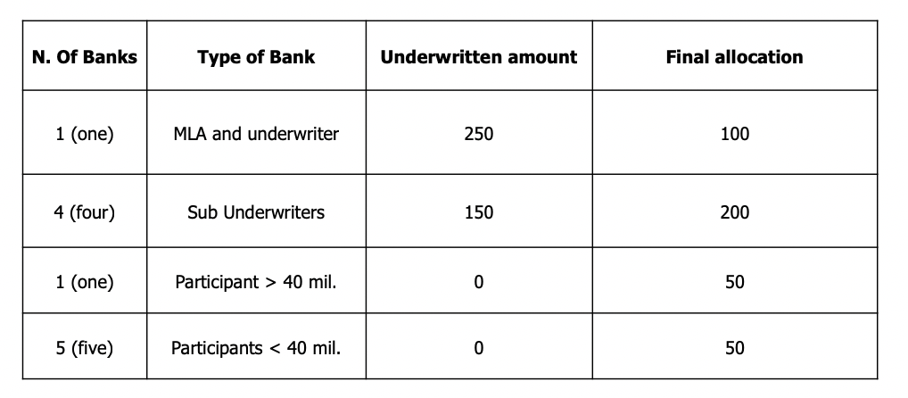
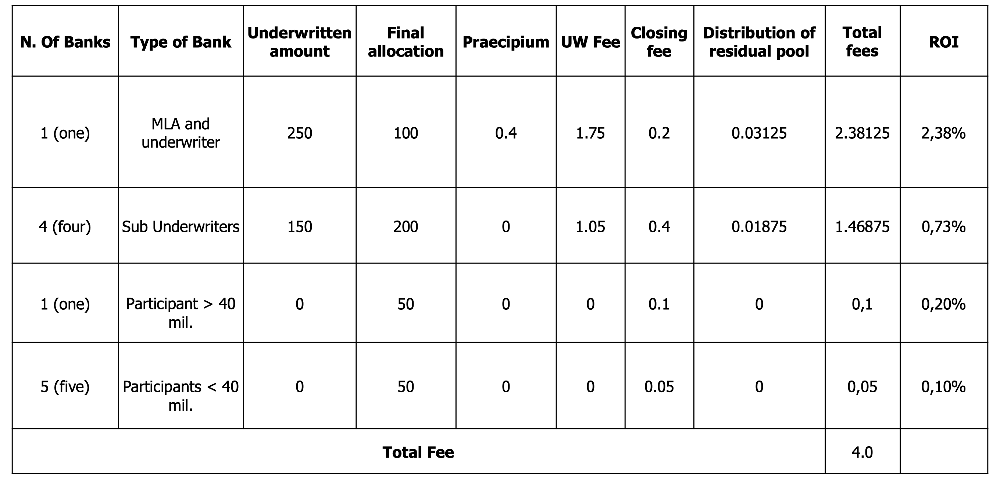

Cases of Loans in DCM
Author: Adam Updated: 27/05/2019
Banks can provide credit either on a short-term basis (uncommitted lines) or with committed lines (that cannot be suspended without notifying the borrower). Committed lines can be in the form of a Term Loan or Revolving Credit Facilities (“RCF”):
- Term Loan: has a scheduled repayment profile and once repaid cannot be redrawn.
- RCF: allows the customer to borrow up to an established limit with no fixed maturity (evergreen) or with a revolving fixed maturity (revolver). The borrower in addition to pay interest on any amount borrowed also pays a commitment fee on the unused amount (when providing credit on a spot basis, on the other hand, the borrower has only to pay interest)
Banks can provide loans with different maturities:
- Bridge loans, self‐liquidating loans: have typically a short tenor (12 months + 6 months) and are repaid with the proceeds of 1) asset disposals, 2) bond take-out 3) capital increases (e.g. usually used to finance an acquisition, in project finance or an LBO transaction).
- Term loans: e.g. 5 years maturity with an amortizing repayment schedule or bullet (payment in one installment at maturity. They differ in terms of collaterals, covenants, fixed vs floating rates.
Banks loans usually present undertakings and financial covenants:
- General undertakings: pari passu, negative pledge, restrictions on merger, restriction on asset disposals, no change of business, restrictions for dividend distributions (the most common) and for making loans/providing guarantees.
- Financial covenants: maintain key figure ratios such as the borrower’s Debt to Equity Ratio and the Debt to EBITDA ratio below certain thresholds defined in the agreement or above in the case of the coverage ratio (EBITDA over interest payments). Covenants can be positive (e.g. financial ratios) or negative (e.g. to restrict the ability to do something).
Bank loans are generally repaid under three alternative schedules.
- Constant instalments: e.g. amortizing loan €1000, 4 years maturity. You repay along the maturity of the instrument a fixed amount given by a mix of interest and principal.
- Constant principal: €1000, 4 years maturity. Here the principal is fixed.
- Bullet: the principal is reimbursed in one installment at maturity. You pay a constant (€100) amount of interest.
Number of banks Numbers matter. Asyndicate composed of a limitednumberof financing institutions ensures a higher degree of confidentiality on the issuer’s information and on the deal itself and implies a significant reduction both in coordination costs and in the timing of the decision-making process.On the other hand, banks bear a greater risk because not all invited parties will actually translate their interest into a capital commitment and hence in an investment, and this may constitute a problem especially amidst market turmoil or in the case less-standardized products are offered. Wider syndicates can indeed reduce risks for the banks involved. However, wider syndicates bear higher coordination costs and more potential confidentiality issues, as information is shared with more participants.
Investment Banks often play the role of Mandated Lead Arrangers, while Commercial Banks participate investing their money once the transaction is underwritten. The Group of MLAs typically underwrites the transaction and after, invites other banks to join and reduce its risk. The process remains open until the MLAs reach their target “final take” (i.e. the amount that they are prepared to keep on their books). In certain conditions the initial pricing can be increased if such objective is not reached in a defined timeframe (“market flex”).
In a syndicate with many banks, thanks to the spread of risk, it is possible to include smaller banks (mainly commercial) and the MLA can retain most of the arrangement fees, which are not going to be shared with the smaller banks (the MLA is exposed against the client for the whole amount of the loan). With few banks, instead, the MLA can invite only big banks.
Selection of banks
Common practice in the capital markets arena sees a reciprocation of invites to participate in deals: if the MLA invites a bank to participate in the syndicate, very likely the invited bank will return the favor when it gets a mandate. Specific characteristics of the loan, of the offer or the borrower could require specific institutions to be included. In general, the borrower suggests MLA to invite some relationship banks, for the rest the MLA calls banks whit whom it has a close relationship or banks it wants to establish a relationship with.
Mandated Lead Arranger Final Take
MLA, together with Underwriters, determines the proportion of the loan to be sold in the market and what to retain on their balance sheet. Final Take is the technical term that indicates the final amount that the MLAs will keep on their books (as anticipated MLAs take all the responsibility in front of the client in an initial phase but at the end they retain just a small fraction of this amount). The tendency is to sell down big portion of the loan (especially in case of Investment Banks), to decrease the amount of absorbed capital. Only big Commercial Banks, that have access to BCE funding, can have the incentive for good credit to retain bigger portion of the loan.
Some banks are specialized in the underwriting & sell business (especially in the LBO space), where they retain small portion of the loan or super senior RCF and they sell down the exposure to institutional investors more prepared to bear the risk of the underlying asset and to receive in exchange a high remuneration.
What makes the difference between strategies in a syndication process is how much the MLA is confident about its ability to place big portions of the loan in market. MLAs have used three strategies:
- Single Stage Mandate: High risk, high return.
- Dual Stage Mandate: it’s a longer process.
- Club-Deal Mandate: it is simply a strategy whereby when a borrower requires funding he asks to a limited number of banks to join together and to form a group. It is a syndicate with Joint MLAs and it is useful because it speeds up the process (advantage for MLA). Risk and return are low.
Management Fee are usually between 0,5-1 percent of the total amount of the loan (it can be higher as a function of the risk of the underline assets). It goes to the MLA to remunerate the different members of the syndicate for their participation. This fee is split into:
- Praecipium: fee paid to the MLA to remunerate it before sharing these fees with others. It is therefore used to remunerate the leading role of the MLA.
- Underwriting Fees: fees paid to Underwriters based on underwritten amount.
- Participation (or Closing) Fees: fees paid to lenders based on the final amount that they are going to provide (final take).
- Agency Fee: fee paid to Agent Bank, between €50-100k depending on how many banks are in the deal.
- Residual Pool: fees paid to MLA and Co-Lead Arrangers.
1. Prada Goes DCM: How to choose the market?
As financial manager of Prada, we would have to consider the possibility of raising 1 billion either through ECM or through DCM.
How to approach this analysis of the financial mix? How to decide the details/features of the financing? If we decide to rely on bond issuing, the starting point is to understand what is going on in the Euro markets (i.e. is the debt market in 2012 in Euro market, financing us by buying our bonds?). We study our competitors. For Prada, competitor was Bulgari (in 2010 it raised €120 m in the Euromarkets, by selling 5‐year bonds and paying a spread of 2.75%. Another competitor is LVMH (in 2011 raised 4‐year bonds with a spread of 1.85% vs LIBOR and 7‐year bonds with a 2% spread).
From the analysis of competitors, we see that although the Euro market was living a crisis not for corporate but government bonds, there was the possibility to raise funds from the bond market. Another possibility for Prada was to refer to the US bond market. Prada could seduce the US market by selling bonds there. In US, there were not competitors, but still the corporate bond market was active and got active after the crisis. There was similar spread of Europe but lower LIBOR US rate.
They could also rely on the Hong Kong bond market. A special trend in the HK market in that period: a lot of financial corporations were selling bonds by issuing DIM‐SUM Bonds. There was again no possibility to rely on competitors, but corporate bond market. In October 2012, McDonald’s was able to sell bonds in Asia paying a total cost of 3% (i=3%). International investors were willing to buy such bonds denominated in Chinese currency because expect to earn money from the appreciation of the currency. The 90% of dim‐sum bonds issued in Asia in that period had a peculiar characteristic: short‐term maturity < 18 months. The expectation in terms of appreciation of the currency cannot be realized in the long term; investors could only speculate on a very short period. All the requests were accepted by Prada, except the short‐term maturity because this clause was exposing it to risk.
Summary: Prada, in terms of debt alternative had several possibilities: Local‐Italian Bank (loans) Local‐Italian Bond Market (bonds) Local Eurobond Market (bonds) Foreign Euro Banks (loans) Foreign Us Bond Market (bond) Foreign HK Dim‐sum Bond Market (bonds) Foreign HK US Bond Market (bonds)
2. Alibaba Goes DCM: Club-Deal Mandate
Five mandate lead arrangers are engaged in this syndicatied loan. Alibaba’s 2012 syndicated loans were the first sizable loans for a Chinese technology company with few tangible assets. Creative loan covenants stated that the subsidiaries would repatriate 100 per cent of the distributable profits for debt service. The loans were partially used for the buyback of Yahoo!’s stake. In the agreement, Yahoo! would sell half of its stake back to Alibaba immediately and an additional 10 per cent during Alibaba’s initial public offering (IPO) in the next few years, and divest the remainder sometime after that. Alibaba now thinks it is time to tap the debt market in order to pay off the $4 billion in loans it received in 2012 and to finish the payments owed to Yahoo! for the stock repurchase.
Because Alibaba is an internet commercial company which had no tangible asset to lenders. In order to complete the loan, Alibaba gave MLAs an access to its net profits, which, according to its 2011's profits, would be over 500 million dollars. Together they signned a convanent which contained five constraints:
- Agree on a specific interest payment and debt service repayment
- Repatriation of 100 percents of profits
- ICR >= 4, where ICR = EBIT/interest payment
- DSR >= 1, where DSR = Net Operating Income/debt service repayment
- D/E ratio <= 1
3. Management Fee of Loans
Consider the following syndicated loan. A loan of €400 million is granted under the following conditions:
- Management fee: 100 b.p.
- Sub-Underwriting fees: 70 b.p.
- Participation fees
- 20 b.p. are offered to banks with a stake greater or equal to €40 million
- Below such amount the participation fee is set equal to 10 b.p.
MEMBERS OF THE SYNDICATE

Management fee is split into:
- Praecipium = Total Loan * (Total fee - Sub UW fees - Partecipant fees)
- UW Fee = UW amount* Sub UW fee
- Closing Fee = Final Allocation MLA * Partecipant fee
The residual pool and its distribution are considered as:
- Residual Pool = [Total Fees - (Praecipium + UW Fees + Closing Fees)]
- Distribution of Residual Pool= [Residual Pool * UW amount]/total loan
The final ROI is:
- ROI = Total Fees/Final Allocation
So the final results are:
